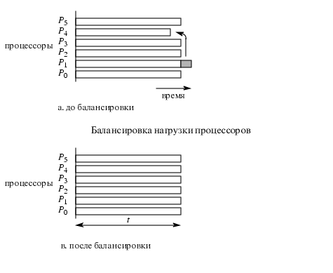
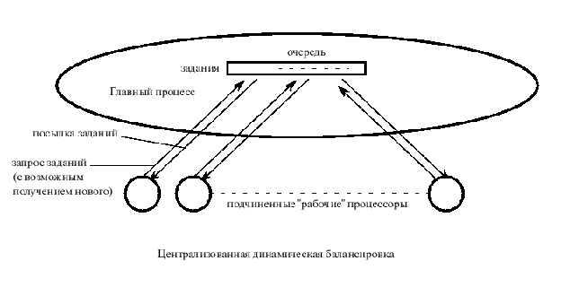
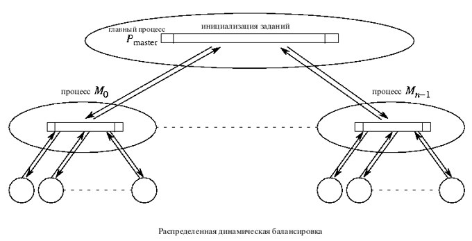

Балансировка загрузки процессоров
Балансировка загрузки (load balancing) - это использование "справедливого" распределения
вычислений по процессорам с целью получения максимально возможной скорости выполнения задачи.
Определение: Параллельное вычисление дает равномерную загруженность, если каждому процессору приходится
выполнять примерно одинаковое количество полезной вычислительной и
коммуникационной работы на каждом временном шаге.
Важным является также детектирование завершения (termination detection) - определение момента завершения выполнения
задачи, что трудно при распределенных вычислениях.
Балансируемость предполагает возможность эффективного динамического перераспределения
загрузки всех процессоров, участвующих в работе.
Качество балансировки зависит как от архитектуры машины, так и от способа осуществления алгоритма.
В общем случае идеальной сбалансированности достигнуть не удается.

Виды балансировки:
Статическая балансировка
Осуществляется до начала выполнения каких бы то ни было процессов. Некоторые возможные технологии
статической балансировки:
- Круговой алгоритм (round robin algorithm) - задания рассылаются процессорам в
последовательном порядке;
- Алгоритм случайных чисел (randomized algorithms) - распределяет подзадачи по процессорам случайным образом, используя генератор случайных чисел;
- Алгоритм рекурсивного деления пополам
(Recursive bisection);
- Генетический алгоритм
(genetic algorithm) - еще одна оптимизационная техника.
Динамическая балансировка
- Централизованная
Существует главный процессор, который руководит всеми остальными процессорами.
- Децентрализованная
Подзадачи передаются между случайными процессорами, коллектив процессоров работает
каждый над своей проблемой самостоятельно и в конце концов рапортует единственному процессору.
В случае централизованной динамической балансировки главный процессор
формирует пакет подзаданий. Подзадания рассылаются по подчиненным процессорам.
Когда подчиненный процессор выполняет одно подзадание, он требует от
главного процессора следующее.
Схема централизованной динамической балансировки загрузки процессоров

Схема децентрализованной динамической балансировки загрузки процессоров

Особенно важна правильная балансировка для параллельных систем баз данных.
Данное требование является нетривиальным, так как в большинстве случаев
невозможно заранее предсказать время выполнения операций, составляющих план
выполнения запроса в базе данных.
Поэтому при разбиении последовательного плана на несколько параллельных планов,
выполняемых на различных процессорах, может возникнуть ситуация, при которой время
выполнения одного из параллельных планов будет составлять 80-90% от общего времени,
необходимого для выполнения всего запроса в целом.


 [Назад]
[Оглавление]
[Вперед]
[Назад]
[Оглавление]
[Вперед]
Последнее обновление 27.12.2001 WebMaster